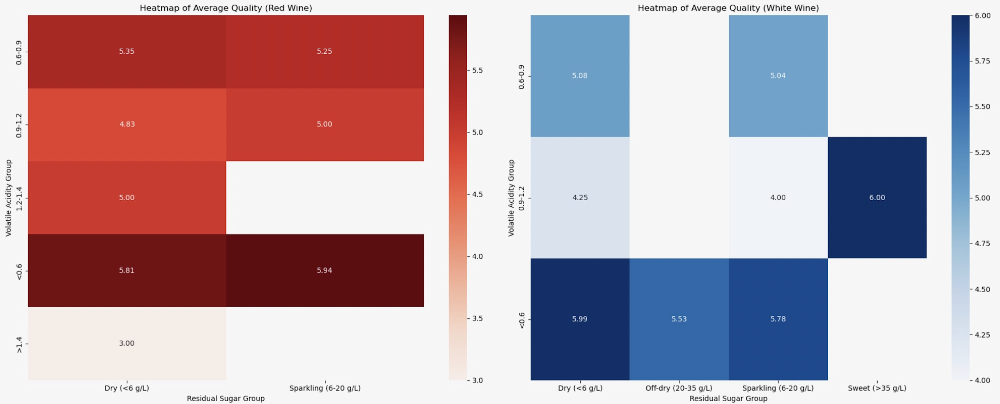

VisualSommelier: Uncorking Wine Quality Through Data
pair Analysis
cost-reduction Analysis
Covariance Analysis
Covariance Analysis Interpretation:
This analysis visualizes the covariance scores of different quality indicators for both red and white wines.
Sustainability Analysis
Sustainability Analysis Interpretation:
This analysis explores the relationship between alcohol content and various sustainability factors in red and white wines.
Heatmap Analysis
The following heatmaps represent the average quality of wines based on residual sugar and volatile acidity group.
Heatmap of Average Quality

High-Scoring Wine Comparison
Explore feature comparisons for high-scoring red and white wines as an interactive bar chart.